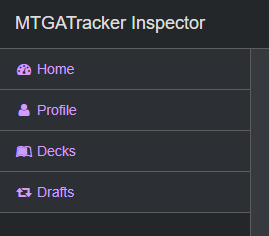
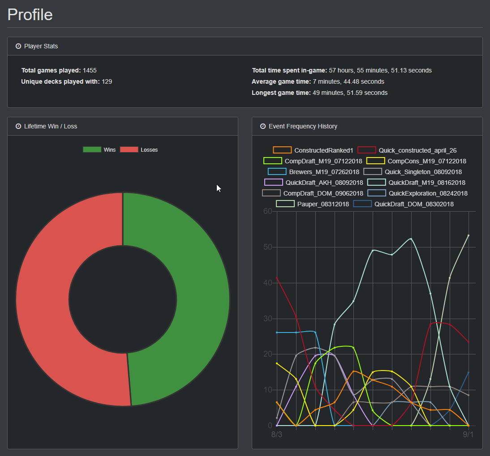
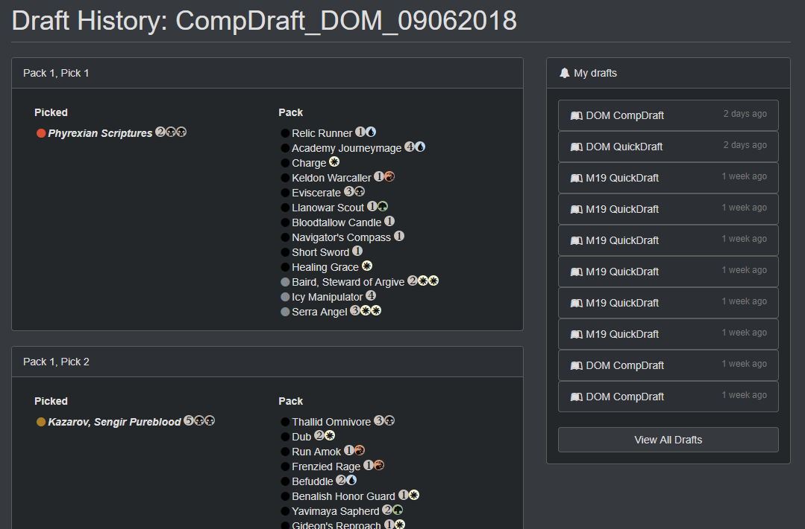
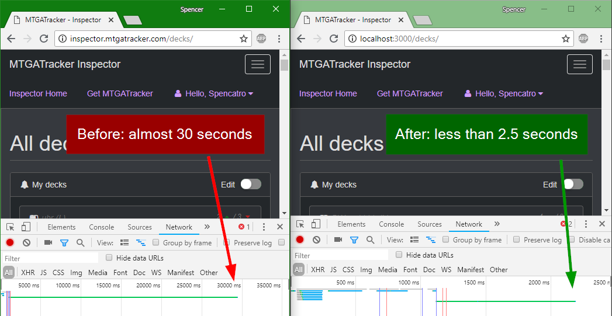
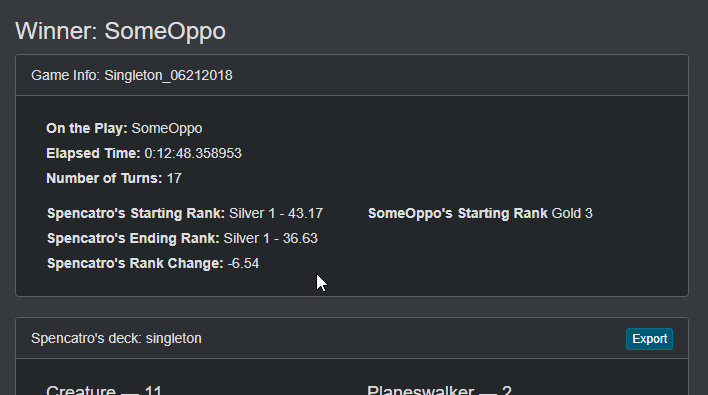
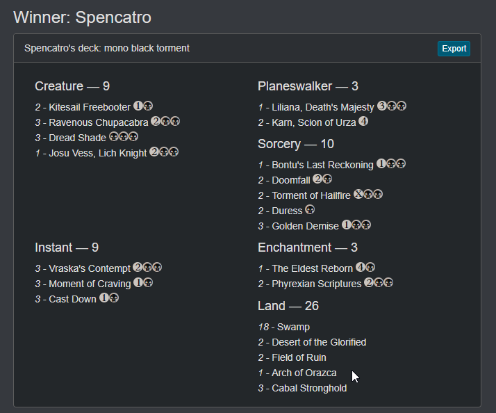
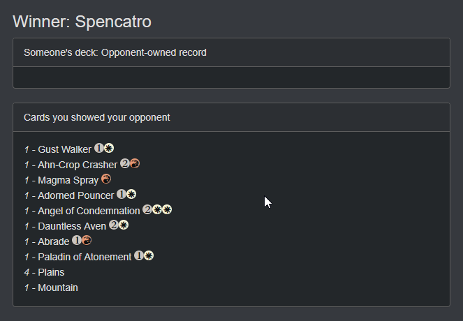

We've added new menu bars to the side of the page, to allow easier access to whatever
part of inspector you're trying to get to!

Profile page
Check out some basic lifetime stats about yourself, like which modes you have been
playing most recently, your lifetime win/loss, and how many hours of your life
WotC has mercilessly plundered from you.

(WIP) Draft History
Get access to your draft history! This data is pretty raw, but we'll be
making lots of updates to this page in the future, both cosmetic and functional.
Huge thanks to isharacomix for contributing a
full-stack draft
history implementation!

Bug fixes
Fixed a race condition in the API which could lead to missing data in
the win/loss bar chart for a deck.
New in version 1.3.1
All decks page loads approximately a zillion times faster!
We've redesigned the way decks are handled in Inspector, in some cases leading to a
decrease of load time to less than 10% of the original, really, really slow load time.

New in version 1.3.0
A whole slew of new metrics!
The latest MTGATracker now reports:
Who's on the play
Elapsed time of a game
Total number of turns
Your start, end, and delta rank
Your opponent's rank
If a game record was uploaded with the latest Tracker, you'll now see these bits of data in inspector as well!

Deck Export buttons!
We're a little behind the times here, but we finally have export buttons!
Lost an old deck that inspector still has? Grab a copy!
See a cool deck in the wild? Export it for yourself--or at
least, a good chunk of it. (You can fill in the blanks!)
Timeline pagination improvements
If there are no more games left to pull from the DB, the button will disable and let you know.
Small UI fixes
Decknames in timelines are now links to the deck's page. The big red & green buttons on timelines are now links to the game's page.
Cleaner deck formatting!
We've cleaned up decklists in Inspector!

New in version 1.2.0
KLD and AER have arrived!
Gone are the days of empty-looking AER draft game pages! (Sorry we didn't fix it before quick draft rotated... 🙁 )
No more getting logged out for clicking a game link!
Whew lads, that was an annoying bug! Now when you click on an "Opponent Owned" record,
you'll be able to get to the game, but you won't be able to see your opponent's deck list.

New in version 1.1.0
Hide decks from quick-view
Too many decks cluttering up your quick-view? Use the edit button to hide the ones you don't care about anymore!
Dark Mode
We know, the white is really bright. Turn on dark mode to be nice to your eyes 😎